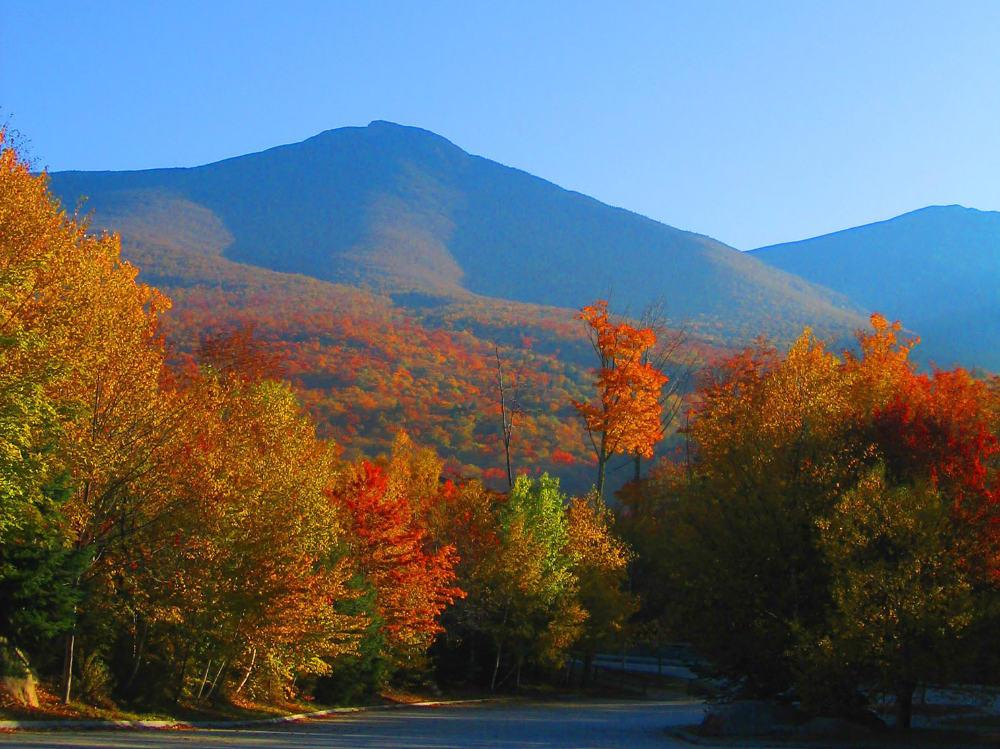
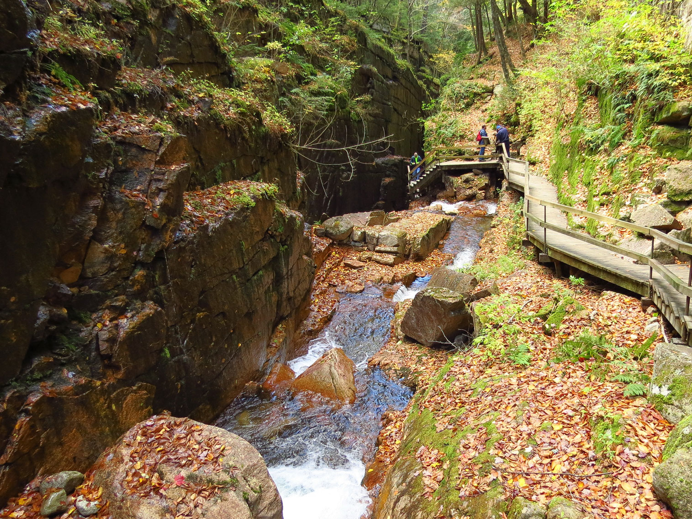
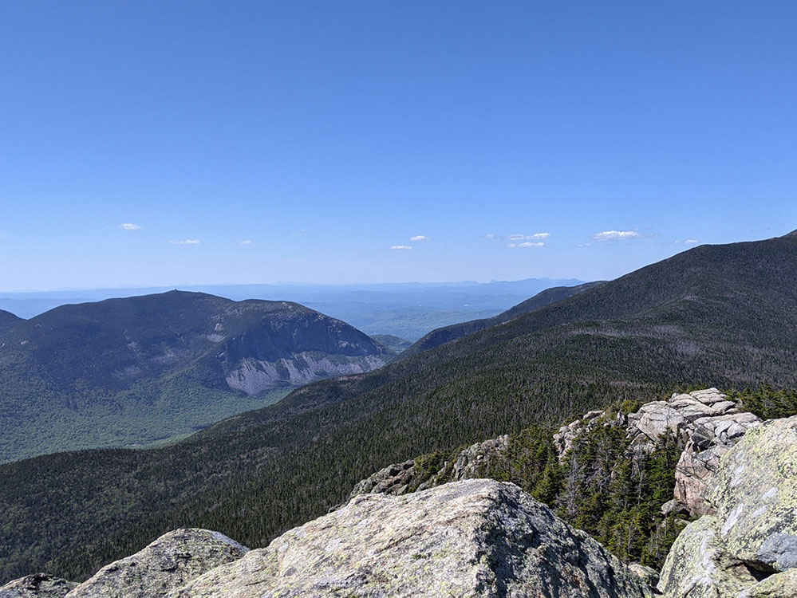
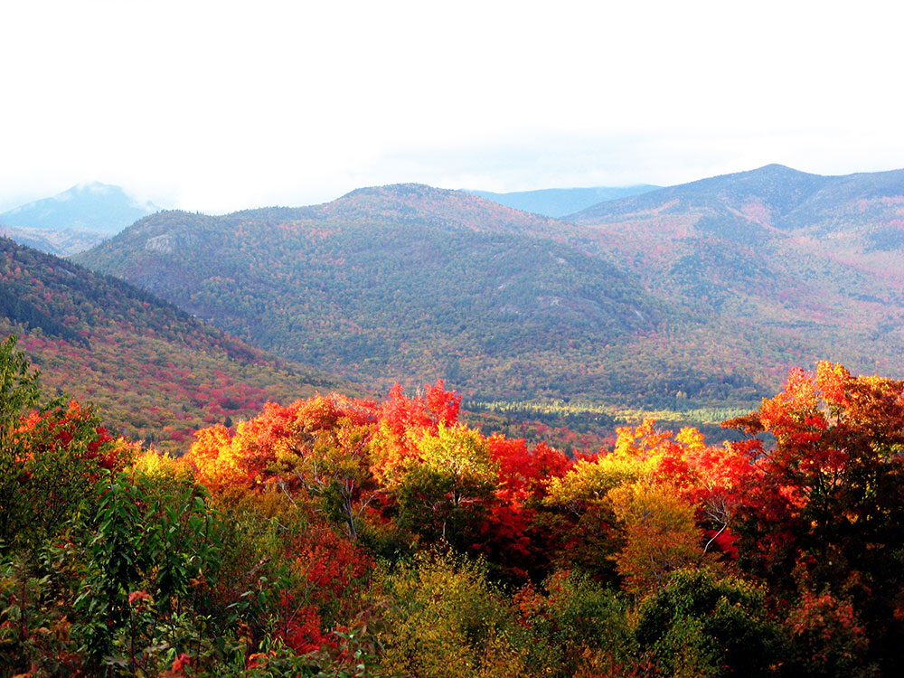

New Hampshire Travel Guide
Hike the White Mountains, drive scenic byways past granite quarries, and explore New Hampshire's charming lake towns and covered bridges.
Places to See in New Hampshire

John Phelan, CC BY 3.0, via Wikimedia Commons; Image Size Adjusted

Kancamagus Highway / New Hampshire Route 112★
Eastern portion of NH 112 through the heart of the scenic and mountainous White Mountain National Forest famous for its views of autumn foliage in September and October

John Phelan, CC BY 3.0, via Wikimedia Commons; Image Size Adjusted
Franconia Notch State Park★
Recreation area and nature preserve that straddles eight miles through Franconia Notch, a mountain pass between the Kinsman Range and Franconia Range in the White Mountains.

John Phelan, CC BY 3.0, via Wikimedia Commons; Image Size Adjusted
Portsmouth★
Historic seaport and popular summer tourist destination on the Piscataqua River bordering the state of Maine.
National Archives and Records Administration, Public domain, via Wikimedia Commons; Image Size Adjusted


BenTL2000, CC BY-SA 4.0, via Wikimedia Commons; Image Size Adjusted

Mountains
Overview
New Hampshire is a New England state of about 1.4 million people, known for the White Mountains, lakes, and a short but beautiful Atlantic coast. Concord is the capital, Manchester is the largest city, and the state's motto, "Live Free or Die," reflects its independent streak. It is named for the English county of Hampshire.
Visitors come to hike, ski, and drive in the White Mountains, including the Kancamagus Highway and Franconia Notch. Others come to climb Mount Washington, boat on Lake Winnipesaukee, explore the historic port of Portsmouth, and see fall foliage. The state also has no sales or broad-based income tax, which makes it a shopping destination.
Geography
New Hampshire is mostly hilly or mountainous, with the White Mountains in the north, the Lakes Region in the center, and the Merrimack Valley and Seacoast in the south. Mount Washington, at 6,288 feet (1,917 m), is the highest peak in the Northeast and is known for some of the world's worst weather. The state has 18 miles of Atlantic coast, the shortest of any coastal state, and Lake Winnipesaukee is the largest lake.
History
The Abenaki and Pennacook peoples lived in the region when English settlers founded Portsmouth and Dover in the 1620s. New Hampshire was a royal colony, and in January 1776 it became the first colony to establish its own government independent of Britain. In 1788, it became the ninth state, ratifying the Constitution and putting it into effect. Textile mills, granite quarrying, and tourism shaped the economy, and Mount Washington Hotel hosted the Bretton Woods conference in 1944.
White Mountains
The White Mountains cover most of northern New Hampshire and are the highest and most rugged mountains in the northeastern United States. The range includes the Presidential Range, with peaks named for presidents, and Mount Washington, at 6,288 feet, the highest peak in the Northeast, which is famous for having some of the worst weather in the world, including a wind gust of 231 miles per hour recorded in 1934. Visitors can reach the summit by hiking, by driving the Mount Washington Auto Road, or by riding the historic Cog Railway, the world's first mountain-climbing cog railway, which opened in 1869. Franconia Notch State Park has the Flume Gorge, the Cannon Mountain Aerial Tramway, and the Old Man of the Mountain site, where a famous granite profile collapsed in 2003. Crawford Notch has waterfalls and railroad views, Lost River Gorge has boulder caves, and the 4,000-footers of the Appalachian Trail attract hikers and peak-baggers. The area is mostly part of the White Mountain National Forest, and activities include skiing, snowshoeing, rock climbing, and fall foliage tours. The Omni Mount Washington Resort, which opened in 1902, is a grand hotel with a view of the mountain.
Kancamagus Highway
The Kancamagus Highway, or "the Kanc," is a 34.5-mile scenic road that crosses the White Mountains between Conway and Lincoln as New Hampshire Route 112. It is regarded as one of the best fall foliage drives in the country, with peak color usually from late September to mid-October, and it is a National Scenic Byway. The road, which has no gas stations or businesses along the way, climbs to 2,855 feet at Kancamagus Pass, with overlooks such as Sugar Hill and Hancock, and passes several waterfalls and swimming spots. Sabbaday Falls has a short, easy walk to a three-tiered cascade, Rocky Gorge is a narrow chasm on the Swift River with a footbridge, and Lower Falls is a popular swimming and picnicking area. Hiking trails, campgrounds, and moose sightings add to the experience, and a recreation pass is needed to park at many pullouts. The road is usually open year-round but may be icy or closed in heavy snow. The nearby Conway area has the Conway Scenic Railroad and outlet shopping.
National Protected Areas
New Hampshire has a few national park sites. Saint-Gaudens National Historical Park in Cornish preserves the home and studios of the sculptor Augustus Saint-Gaudens, and the Appalachian National Scenic Trail crosses the White Mountains. The Lamprey Wild and Scenic River and Great Bay National Wildlife Refuge protect natural areas. The White Mountains also contain popular hiking trails and the Mount Washington Cog Railway.
State Parks and Historic Sites
New Hampshire's state parks include Franconia Notch, with the Flume Gorge and the site of the former Old Man of the Mountain, and Odiorne Point on the Seacoast. Historic sites include Canterbury Shaker Village, Castle in the Clouds, and the Zimmerman House, designed by Frank Lloyd Wright. Lost River Gorge, Diana's Baths, and Mount Monadnock are scenic spots.
Seasons and When to Visit
Fall is the most popular season, with peak foliage from late September to mid-October, and the Kancamagus is especially beautiful. Summer is the best time for hiking, swimming, and boating, and winter brings skiing, snowmobiling, and ice fishing. Spring is "mud season" and a quiet time, though maple sugaring happens in March. Mountain weather can change quickly, so hikers should be prepared.
This article uses material from the Wikipedia article "New_Hampshire", which is released under the Creative Commons Attribution-Share-Alike License 3.0. Additional information was drawn from National Park Service, New Hampshire State Parks, and Visit New Hampshire.
